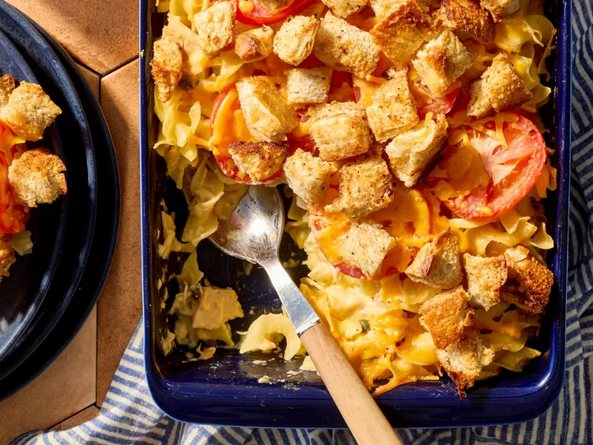

Tuna Melt Casserole
Home

Description
This tuna melt casserole is an updated spin on tuna noodle, a baked version of the classic hot sandwich. If you like it spicy, use jalapeños instead of the capers.
Ingredients
- 1 (12 ounce) package wide egg noodles
- 4 tablespoons butter, divided
- 1/2 cup chopped onion
- 1/2 cup chopped celery
Steps
- Preheat the oven to 400 degrees F (200 degrees C). Grease a 9x13-inch baking dish.
- Fill a large pot with lightly salted water and bring to a rapid boil. Cook egg noodles at a boil until tender yet firm to the bite, 7 to 9 minutes. Drain noodles and return to pot.
- Melt 3 tablespoons butter in a large skillet over medium heat. Add onion, celery, and garlic. Cook, stirring frequently, until tender, about 6 minutes. Gradually stir in flour, salt, and cayenne. Cook, stirring constantly, until flour is lightly golden, about 1 minute. Whisk in milk. Cook, whisking constantly, until thickened and bubbly. Gradually stir in 1 cup cheese. Cook, stirring constantly, until cheese melts and sauce is smooth.
- Stir sauce, tuna, capers, and mustard into noodles. Transfer to prepared dish.
- Melt remaining 1 tablespoon butter. Toss bread cubes with melted butter and seafood seasoning. Arrange tomato slices over noodle mixture. Sprinkle with remaining 1 cup cheese. Top with seasoned bread cubes.
- Bake in the preheated oven until hot and bubbly and bread cubes are lightly browned, 25 minutes.